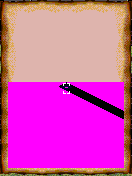
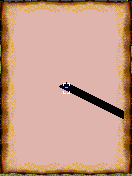

We brought the Crash/South Park ExEn foundation to Age of Empires II. Then the game drew its own minimap and exposed a transparency gap in the renderer we’d inherited.AE01
The same map, before and after.
A composited render target no longer had the decoded source-index buffer that the original transparency path used. Its palette alpha still mattered. Ignoring that alpha leaked magenta into the minimap.AE01

The same saved original minimap before palette-alpha repair:9444visible magenta key pixels. Historical host baseline reproduction.
Open the image for the full original view.
AE90
The matching minimap after the composited palette-alpha repair, with zero leaked magenta and all non-key pixels unchanged.
Open the image for the full original view.
AE91We compared the same original VM snapshot before and after the repair: 9,444 exposed magenta pixels became zero, with every non-key pixel unchanged. Ordinary decoded images kept their separate index-based transparency. We’d fixed the generated map without changing the other picture path.AE02
Orders on a keypad.
The game distinguished Select from its validation softkey, and arrowed menu values from committing the choice. Dedicated diagonal digits, MAP 0, BUILD hash and contextual UNITS star remained available around the original viewport. Campaign generation kept its own timing, including its wait.AE03
The retained original VM route followed tutorial and generated campaign play. Its foundation still required original ExEn runtime inputs alongside the EXN. The cleaner map was a renderer repair inside that route, not a rebuilt strategy game.AE04AE05
About these records
The before/after images are historical original-VM host captures from a matching state. The minimap count is an exact selected comparison, not a general performance measurement. Original EXN game bytes remain unchanged. Framework shell and report-boundary limitations retain their source scope; no phone or campaign-completion verdict is added.
The receipts
Selected source lines, investigation notes and recorded feedback. Open a receipt for the original context and scope.
AE01 / The ExEn family and the generated minimapCheckpoint investigation notes
Source: Age_of_Empires_II_ExEn_Bridge_v0.1.0_PRIVATE_CHECKPOINT.zip / Age_of_Empires_II_ExEn_Bridge_v0.1.0_PRIVATE/native/README.md · selected lines 1–9
# Age of Empires II Mobile ExEn runtime Portable ExEn VM adapted from Handyplay / mohamedahmed166e, pinned upstream 460b149302e9a52523bc314a37efabbee9f3d666, AGPL-3.0. See LICENSE-AGPL-3.0.txt. Reuses the private Crash/South Park full-width arrays, String conversion, original-font separation, canonical pen color, dialog and FIFO/timing repairs. Graphics.drawImage now honors original palette-alpha on composited render targets without source index buffers. This corrects the original game's generated 240x120 minimap; decoded images retain index-based transparency unchanged. No original bytecode/assets/logic or progression is patched.
AE90 / Historical image / Age of Empires II MobileHistorical host capture
Source: Age_of_Empires_II_ExEn_Bridge_v0.1.0_PRIVATE/evidence/acceptance/minimap-before.png
Retained historical host output. Original emulator chrome, where present, is part of the unchanged source image. No phone capture or phone performance is inferred.
Unchanged historical image. Source member: Age_of_Empires_II_ExEn_Bridge_v0.1.0_PRIVATE/evidence/acceptance/minimap-before.png SHA-256: b37d3df619e3335f4de38241d4e795ebdb32cfe68a491c5d7971ae55250ead1a The same saved original minimap before palette-alpha repair:9444visible magenta key pixels. Historical host baseline reproduction. Scope: Historical same-VM-snapshot comparison; no original game bytes changed; not phone output.
AE91 / Historical image / Age of Empires II MobileHistorical host capture
Source: Age_of_Empires_II_ExEn_Bridge_v0.1.0_PRIVATE/evidence/acceptance/minimap-after.png
Retained historical host output. Original emulator chrome, where present, is part of the unchanged source image. No phone capture or phone performance is inferred.
Unchanged historical image. Source member: Age_of_Empires_II_ExEn_Bridge_v0.1.0_PRIVATE/evidence/acceptance/minimap-after.png SHA-256: 0280d33a4198bac9c3596fd6180de91c9bd17483f85c070dbc9fb174d52506ea The matching minimap after the composited palette-alpha repair, with zero leaked magenta and all non-key pixels unchanged. Scope: Historical same-VM-snapshot comparison; no original game bytes changed; not phone output.
AE02 / Nine thousand magenta pixels disappear without changing the othersHistorical original-VM host regression
Source: Age_of_Empires_II_ExEn_Bridge_v0.1.0_PRIVATE_CHECKPOINT.zip / Age_of_Empires_II_ExEn_Bridge_v0.1.0_PRIVATE/VERIFICATION.txt · selected lines 32–38
PASS — Minimap regression on same original VM snapshot: 9,444 exposed magenta pixels before, zero after; every non-key pixel unchanged. Fix only applies to palette-alpha on composited render targets without source index buffers. Indexed source image transparency still compares source indices. Original game unchanged. Host loader's existing nonfatal BadOffsetTable advisory remains visible because its complete classfile parser handles this title; it is not counted as success or hidden as a cleared error. No detailed instruction tracing in release builds.
AE03 / Diagonal digits and a separate validation softkeyCheckpoint investigation notes
Source: Age_of_Empires_II_ExEn_Bridge_v0.1.0_PRIVATE_CHECKPOINT.zip / Age_of_Empires_II_ExEn_Bridge_v0.1.0_PRIVATE/README_FIRST.txt · selected lines 7–14
SELECT 5 confirms ordinary selections; OK/NEXT is the original validation softkey. Left/right changes an arrowed menu value; down/validation commits the choice. Campaign map generation retains original timing and can take a while. The normal eight-way digital pad sends exact diagonal digits 1/3/7/9. MAP 0, BUILD #, contextual UNITS *, and original BACK/MENU are directly usable. ORIGINAL KEYPAD and D-PAD RETURN switch inline with the same live viewport. Android system Back closes the game. SAVE REPORT writes to Downloads/Age of Empires II ExEn Bridge/ independently of the game worker.
AE04 / Tutorial and generated campaign run on the original VMHistorical original-VM host acceptance
Source: Age_of_Empires_II_ExEn_Bridge_v0.1.0_PRIVATE_CHECKPOINT.zip / Age_of_Empires_II_ExEn_Bridge_v0.1.0_PRIVATE/VERIFICATION.txt · selected lines 23–30
PASS — Original title/menu/tutorial on release C ABI host: 3,524 ticks, zero VM faults and input overflows, all eight direction frame changes, live minimap, build menu, original pause/menu return, native snapshot framebuffer roundtrip. Original monophonic audio events observed. No campaign/tutorial completion claimed. Separate manual final-runtime Campaign 1 evidence: generated map, original briefing, live map with starting army, build/minimap access, pause/resume and snapshot roundtrip; 2,275 ticks, zero VM faults/input overflows. Unit orders were exercised but no full mission objective or combat outcome was certified.
AE05 / An EXN is not the complete original runtime inputCheckpoint investigation notes
Source: Age_of_Empires_II_ExEn_Bridge_v0.1.0_PRIVATE_CHECKPOINT.zip / Age_of_Empires_II_ExEn_Bridge_v0.1.0_PRIVATE/VERIFICATION.txt · selected lines 40–45
PASS — Strict inventory hashes every original asset, retained Android icon asset, notices and compatibility library. Exact EXN recognition and stable game identity embedded before signing. Game/firmware/font data absent from native ELF. EXN-only public source reconstruction is BLOCKED: requires original platform classes exen_builtins.bin and original font_5x8.bin, neither present in the EXN. No production Omni import/host or cumulative public-export acceptance was run.